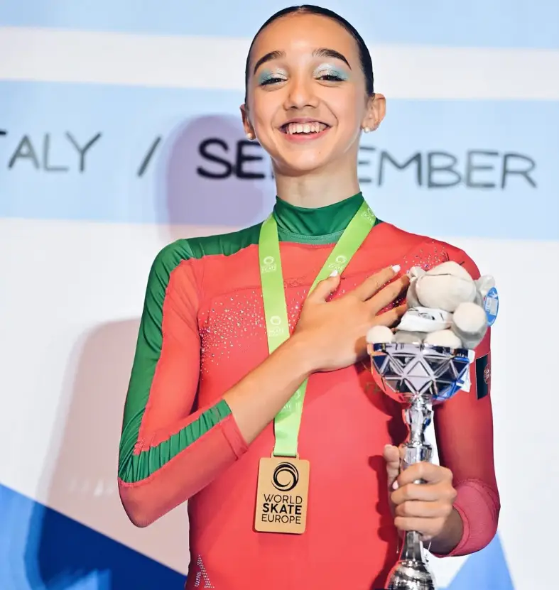
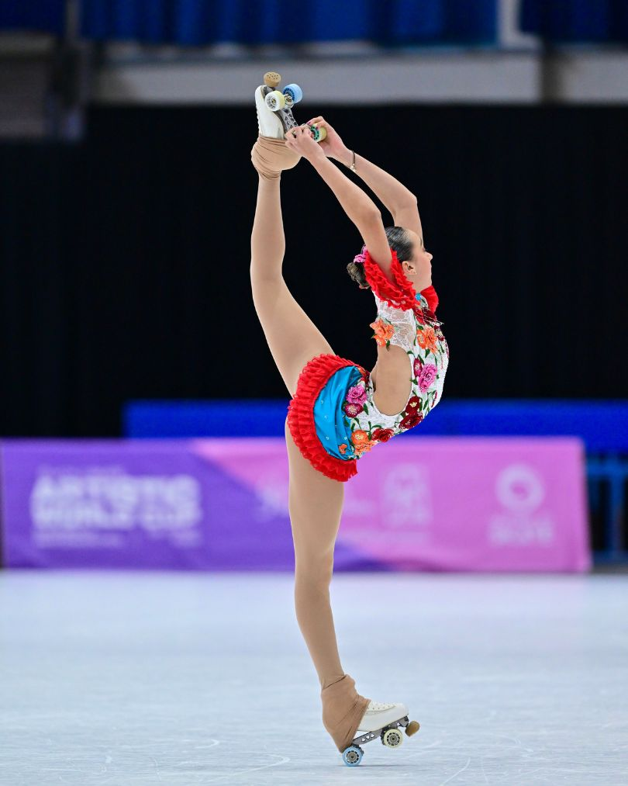
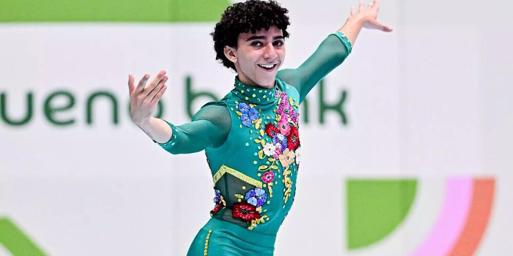
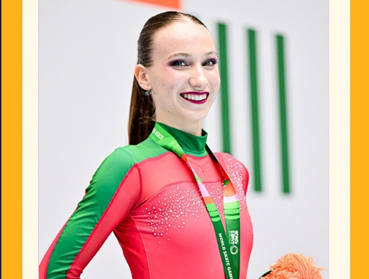
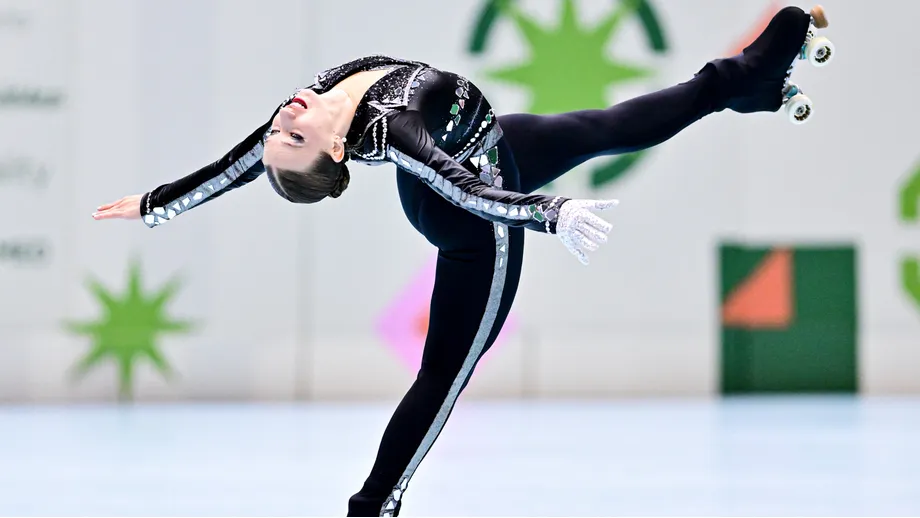
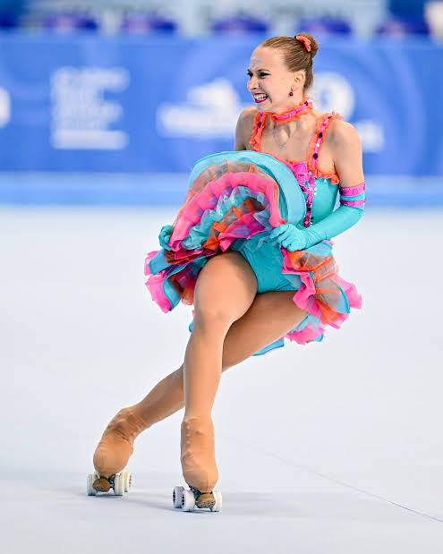
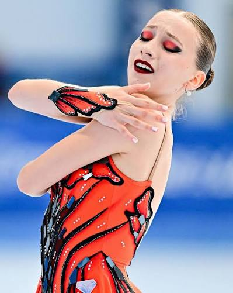
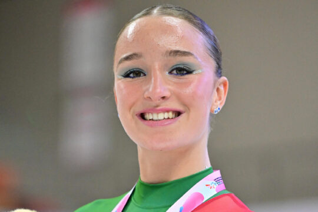
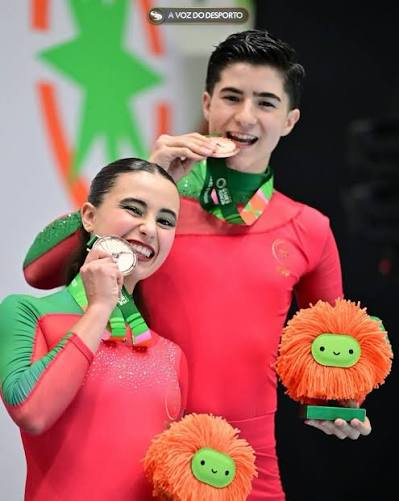

Portugal conquistou medalhas de ouro,prata e bronze na Patinagem Artística nos World Skate Games 2026, realizados em Assunção, no Paraguai.
Patinadora madeirense de 17 anos, revalidou o título de campeã mundial sénior de patinagem artística livre nos World Skate Games, em Assunção, no Paraguai. Somou 264,69 pontos, superando os 260,15 com que foi campeã em 2025, na China.
Este ano foi também bicampeã europeia, e Portugal tornou-se assim uma referência na modalidade graças a ela.


Estabeleceu o seu novo recorde pessoal e o recorde mundial absoluto no escalão sénior feminino de Patinagem Livre, superando em cerca de quatro pontos o máximo anterior que já lhe pertencia.
É campeão do mundo júnior de patinagem artística livre. Já tinha sido campeão europeu na mesma categoria em setembro.
Foi a primeira medalha de Portugal na patinagem nesta edição, antes do bronze de Rita Azinheira e do ouro de Madalena Costa.

Sagrou-se Campeã do Mundo de Solo Dance no escalão de Juniores.
A jovem patinadora portuguesa de 17 anos, natural de Leiria e atleta do clube Rolar de Matosinhos, alcançou o topo do pódio a 14 de outubro de 2026.




| Nome | Pontuação final | Vertente |
|---|---|---|
| Madalena Costa | 264,69 | Patiagem Livre |
| João Cruz | 255,75 | Patinagem Livre |
| Albina Kachur | 148,00 | Solo Dance |

